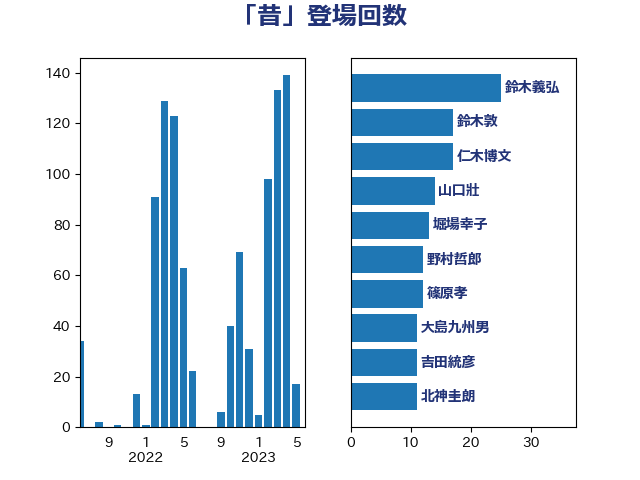

単語「昔」

| 麻生太郎 | 自由民主党 | 52 回 |
| 田村憲久 | 自由民主党 | 16 回 |
| 山口壯 | 自由民主党 | 14 回 |
| 吉田統彦 | 立憲民主党 | 13 回 |
| 梅村聡 | 日本維新の会 | 13 回 |
| 田嶋要 | 立憲民主党 | 11 回 |
| 後藤祐一 | 立憲民主党 | 10 回 |
| 松木けんこう | 立憲民主党 | 10 回 |
| 足立康史 | 日本維新の会 | 10 回 |
| 岸真紀子 | 立憲民主党 | 9 回 |
| 萩生田光一 | 自由民主党 | 9 回 |
| 赤羽一嘉 | 公明党 | 9 回 |
| 奥野総一郎 | 立憲民主党 | 8 回 |
| 階猛 | 立憲民主党 | 8 回 |
| 三木亨 | 自由民主党 | 7 回 |
| 市村浩一郎 | 日本維新の会 | 7 回 |
| 末松信介 | 自由民主党 | 7 回 |
| 石井章 | 日本維新の会 | 7 回 |
| 礒崎哲史 | 国民民主党 | 7 回 |
| 篠原孝 | 立憲民主党 | 7 回 |
| 茂木敏充 | 自由民主党 | 7 回 |
| 鈴木義弘 | 国民民主党 | 7 回 |
| 高良鉄美 | 無所属 | 7 回 |
| 仁木博文 | 無所属 | 6 回 |
| 伊藤孝恵 | 国民民主党 | 6 回 |
| 杉本和巳 | 日本維新の会 | 6 回 |
| 梅村みずほ | 日本維新の会 | 6 回 |
| 浅田均 | 日本維新の会 | 6 回 |
| 田村貴昭 | 日本共産党 | 6 回 |
| 石井苗子 | 日本維新の会 | 6 回 |
| 紙智子 | 日本共産党 | 6 回 |
| 緒方林太郎 | 無所属 | 6 回 |
| 須藤元気 | 無所属 | 6 回 |
| 串田誠一 | 日本維新の会 | 5 回 |
| 佐藤正久 | 自由民主党 | 5 回 |
| 北神圭朗 | 無所属 | 5 回 |
| 宮本徹 | 日本共産党 | 5 回 |
| 林芳正 | 自由民主党 | 5 回 |
| 櫻井周 | 立憲民主党 | 5 回 |
| 江田憲司 | 立憲民主党 | 5 回 |
| 海江田万里 | 立憲民主党 | 5 回 |
| 熊谷裕人 | 立憲民主党 | 5 回 |
| 田名部匡代 | 立憲民主党 | 5 回 |
| 藤田文武 | 日本維新の会 | 5 回 |
| 野間健 | 立憲民主党 | 5 回 |
| 伴野豊 | 立憲民主党 | 4 回 |
| 古川元久 | 国民民主党 | 4 回 |
| 国光あやの | 自由民主党 | 4 回 |
| 寺田学 | 立憲民主党 | 4 回 |
| 岡本三成 | 公明党 | 4 回 |
| 川田龍平 | 立憲民主党 | 4 回 |
| 末松義規 | 立憲民主党 | 4 回 |
| 柴田巧 | 日本維新の会 | 4 回 |
| 浅野哲 | 国民民主党 | 4 回 |
| 浦野靖人 | 日本維新の会 | 4 回 |
| 清水貴之 | 日本維新の会 | 4 回 |
| 鈴木敦 | 国民民主党 | 4 回 |
| 上川陽子 | 自由民主党 | 3 回 |
| 中川正春 | 立憲民主党 | 3 回 |
| 井坂信彦 | 立憲民主党 | 3 回 |
| 伊佐進一 | 公明党 | 3 回 |
| 前原誠司 | 国民民主党 | 3 回 |
| 和田有一朗 | 日本維新の会 | 3 回 |
| 大塚拓 | 自由民主党 | 3 回 |
| 大西健介 | 立憲民主党 | 3 回 |
| 大野泰正 | 自由民主党 | 3 回 |
| 山田賢司 | 自由民主党 | 3 回 |
| 川合孝典 | 国民民主党 | 3 回 |
| 早坂敦 | 日本維新の会 | 3 回 |
| 杉尾秀哉 | 立憲民主党 | 3 回 |
| 森屋隆 | 立憲民主党 | 3 回 |
| 武井俊輔 | 自由民主党 | 3 回 |
| 玉木雄一郎 | 国民民主党 | 3 回 |
| 田島麻衣子 | 立憲民主党 | 3 回 |
| 盛山正仁 | 自由民主党 | 3 回 |
| 竹内真二 | 公明党 | 3 回 |
| 落合貴之 | 立憲民主党 | 3 回 |
| 辻清人 | 自由民主党 | 3 回 |
| 酒井庸行 | 自由民主党 | 3 回 |
| 野田聖子 | 自由民主党 | 3 回 |
| 長妻昭 | 立憲民主党 | 3 回 |
| 阿部知子 | 立憲民主党 | 3 回 |
| 三浦信祐 | 公明党 | 2 回 |
| 上野通子 | 自由民主党 | 2 回 |
| 下野六太 | 公明党 | 2 回 |
| 伊波洋一 | 無所属 | 2 回 |
| 住吉寛紀 | 日本維新の会 | 2 回 |
| 加藤勝信 | 自由民主党 | 2 回 |
| 務台俊介 | 自由民主党 | 2 回 |
| 古賀之士 | 立憲民主党 | 2 回 |
| 吉川元 | 立憲民主党 | 2 回 |
| 嘉田由紀子 | 無所属 | 2 回 |
| 土田慎 | 自由民主党 | 2 回 |
| 堀場幸子 | 日本維新の会 | 2 回 |
| 大野敬太郎 | 自由民主党 | 2 回 |
| 室井邦彦 | 日本維新の会 | 2 回 |
| 小山展弘 | 立憲民主党 | 2 回 |
| 小泉進次郎 | 自由民主党 | 2 回 |
| 小野泰輔 | 日本維新の会 | 2 回 |
| 小野田紀美 | 自由民主党 | 2 回 |
| 山井和則 | 立憲民主党 | 2 回 |
| 山岸一生 | 立憲民主党 | 2 回 |
| 山崎正恭 | 公明党 | 2 回 |
| 山本剛正 | 日本維新の会 | 2 回 |
| 斉藤鉄夫 | 公明党 | 2 回 |
| 杉久武 | 公明党 | 2 回 |
| 松原仁 | 立憲民主党 | 2 回 |
| 枝野幸男 | 立憲民主党 | 2 回 |
| 柳ヶ瀬裕文 | 日本維新の会 | 2 回 |
| 森屋宏 | 自由民主党 | 2 回 |
| 櫻井充 | 自由民主党 | 2 回 |
| 武田良太 | 自由民主党 | 2 回 |
| 池下卓 | 日本維新の会 | 2 回 |
| 河野義博 | 公明党 | 2 回 |
| 泉健太 | 立憲民主党 | 2 回 |
| 浅川義治 | 日本維新の会 | 2 回 |
| 源馬謙太郎 | 立憲民主党 | 2 回 |
| 牧原秀樹 | 自由民主党 | 2 回 |
| 石田昌宏 | 自由民主党 | 2 回 |
| 福島伸享 | 無所属 | 2 回 |
| 空本誠喜 | 日本維新の会 | 2 回 |
| 羽生田俊 | 自由民主党 | 2 回 |
| 舟山康江 | 国民民主党 | 2 回 |
| 荒井優 | 立憲民主党 | 2 回 |
| 菅直人 | 立憲民主党 | 2 回 |
| 西田昌司 | 自由民主党 | 2 回 |
| 谷田川元 | 立憲民主党 | 2 回 |
| 足立敏之 | 自由民主党 | 2 回 |
| 道下大樹 | 立憲民主党 | 2 回 |
| 野田佳彦 | 立憲民主党 | 2 回 |
| 鈴木俊一 | 自由民主党 | 2 回 |
| 長浜博行 | 無所属 | 2 回 |
| 青山繁晴 | 自由民主党 | 2 回 |
| 高木かおり | 日本維新の会 | 2 回 |
| 高橋英明 | 日本維新の会 | 2 回 |
| 上田英俊 | 自由民主党 | 1 回 |
| 下条みつ | 立憲民主党 | 1 回 |
| 中島克仁 | 立憲民主党 | 1 回 |
| 中川宏昌 | 公明党 | 1 回 |
| 中谷真一 | 自由民主党 | 1 回 |
| 丸川珠代 | 自由民主党 | 1 回 |
| 井出庸生 | 自由民主党 | 1 回 |
| 今井絵理子 | 自由民主党 | 1 回 |
| 今村雅弘 | 自由民主党 | 1 回 |
| 佐々木さやか | 公明党 | 1 回 |
| 加藤竜祥 | 自由民主党 | 1 回 |
| 勝部賢志 | 立憲民主党 | 1 回 |
| 北村経夫 | 自由民主党 | 1 回 |
| 古川禎久 | 自由民主党 | 1 回 |
| 吉川ゆうみ | 自由民主党 | 1 回 |
| 吉川沙織 | 立憲民主党 | 1 回 |
| 吉田忠智 | 立憲民主党 | 1 回 |
| 吉田豊史 | 日本維新の会 | 1 回 |
| 吉良州司 | 無所属 | 1 回 |
| 土屋品子 | 自由民主党 | 1 回 |
| 堀井巌 | 自由民主党 | 1 回 |
| 塩崎彰久 | 自由民主党 | 1 回 |
| 塩村あやか | 立憲民主党 | 1 回 |
| 大島敦 | 立憲民主党 | 1 回 |
| 太田房江 | 自由民主党 | 1 回 |
| 守島正 | 日本維新の会 | 1 回 |
| 宮崎政久 | 自由民主党 | 1 回 |
| 宮崎雅夫 | 自由民主党 | 1 回 |
| 宮本岳志 | 日本共産党 | 1 回 |
| 寺田静 | 無所属 | 1 回 |
| 小宮山泰子 | 立憲民主党 | 1 回 |
| 小島敏文 | 自由民主党 | 1 回 |
| 小林茂樹 | 自由民主党 | 1 回 |
| 小林鷹之 | 自由民主党 | 1 回 |
| 小渕優子 | 自由民主党 | 1 回 |
| 小熊慎司 | 立憲民主党 | 1 回 |
| 尾崎正直 | 自由民主党 | 1 回 |
| 尾辻秀久 | 無所属 | 1 回 |
| 山添拓 | 日本共産党 | 1 回 |
| 山田宏 | 自由民主党 | 1 回 |
| 岡本あき子 | 立憲民主党 | 1 回 |
| 岩本剛人 | 自由民主党 | 1 回 |
| 岩谷良平 | 日本維新の会 | 1 回 |
| 岸信夫 | 自由民主党 | 1 回 |
| 平井卓也 | 自由民主党 | 1 回 |
| 平口洋 | 自由民主党 | 1 回 |
| 平山佐知子 | 無所属 | 1 回 |
| 平木大作 | 公明党 | 1 回 |
| 後藤田正純 | 自由民主党 | 1 回 |
| 斎藤アレックス | 国民民主党 | 1 回 |
| 斎藤洋明 | 自由民主党 | 1 回 |
| 木村英子 | れいわ新選組 | 1 回 |
| 本庄知史 | 立憲民主党 | 1 回 |
| 杉田水脈 | 自由民主党 | 1 回 |
| 東徹 | 日本維新の会 | 1 回 |
| 松川るい | 自由民主党 | 1 回 |
| 松沢成文 | 日本維新の会 | 1 回 |
| 梅谷守 | 立憲民主党 | 1 回 |
| 森山浩行 | 立憲民主党 | 1 回 |
| 森田俊和 | 立憲民主党 | 1 回 |
| 横山信一 | 公明党 | 1 回 |
| 櫛渕万里 | れいわ新選組 | 1 回 |
| 武村展英 | 自由民主党 | 1 回 |
| 水岡俊一 | 立憲民主党 | 1 回 |
| 浮島智子 | 公明党 | 1 回 |
| 渡辺周 | 立憲民主党 | 1 回 |
| 滝波宏文 | 自由民主党 | 1 回 |
| 片山大介 | 日本維新の会 | 1 回 |
| 牧義夫 | 立憲民主党 | 1 回 |
| 牧野たかお | 自由民主党 | 1 回 |
| 猪口邦子 | 自由民主党 | 1 回 |
| 玄葉光一郎 | 立憲民主党 | 1 回 |
| 田村智子 | 日本共産党 | 1 回 |
| 白石洋一 | 立憲民主党 | 1 回 |
| 石井正弘 | 自由民主党 | 1 回 |
| 石垣のりこ | 立憲民主党 | 1 回 |
| 神田憲次 | 自由民主党 | 1 回 |
| 福島みずほ | 社会民主党 | 1 回 |
| 福田昭夫 | 立憲民主党 | 1 回 |
| 稲富修二 | 立憲民主党 | 1 回 |
| 稲津久 | 公明党 | 1 回 |
| 笹川博義 | 自由民主党 | 1 回 |
| 篠原豪 | 立憲民主党 | 1 回 |
| 緑川貴士 | 立憲民主党 | 1 回 |
| 羽田次郎 | 立憲民主党 | 1 回 |
| 自見はなこ | 自由民主党 | 1 回 |
| 若宮健嗣 | 自由民主党 | 1 回 |
| 若松謙維 | 公明党 | 1 回 |
| 葉梨康弘 | 自由民主党 | 1 回 |
| 薗浦健太郎 | 自由民主党 | 1 回 |
| 藤岡隆雄 | 立憲民主党 | 1 回 |
| 藤巻健太 | 日本維新の会 | 1 回 |
| 藤木眞也 | 自由民主党 | 1 回 |
| 西野太亮 | 自由民主党 | 1 回 |
| 西銘恒三郎 | 自由民主党 | 1 回 |
| 越智隆雄 | 自由民主党 | 1 回 |
| 辻元清美 | 立憲民主党 | 1 回 |
| 逢坂誠二 | 立憲民主党 | 1 回 |
| 遠藤敬 | 日本維新の会 | 1 回 |
| 重徳和彦 | 立憲民主党 | 1 回 |
| 野村哲郎 | 自由民主党 | 1 回 |
| 金子恭之 | 自由民主党 | 1 回 |
| 金村龍那 | 日本維新の会 | 1 回 |
| 鈴木宗男 | 日本維新の会 | 1 回 |
| 鈴木憲和 | 自由民主党 | 1 回 |
| 鎌田さゆり | 立憲民主党 | 1 回 |
| 阿部弘樹 | 日本維新の会 | 1 回 |
| 高橋千鶴子 | 日本共産党 | 1 回 |
| 高階恵美子 | 自由民主党 | 1 回 |